|
|
|


截面类型
- 轴肩
- 带退刀槽的轴肩
| 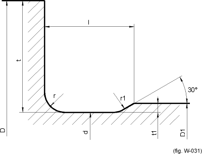 | 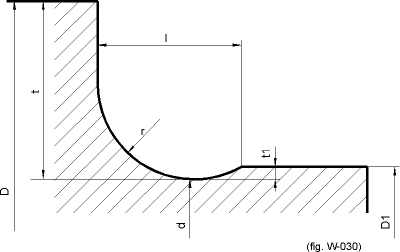 |
| FKM 形状 B | FKM 形状 D |
| 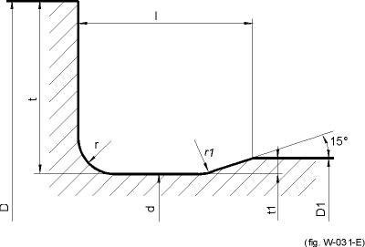 | 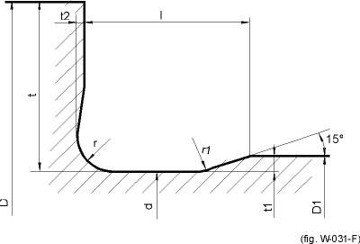 |
| DIN 509 形状 E | DIN 509 形状 F |
| 根据 FKM，这些形状按形状 B 处理。 | |
| 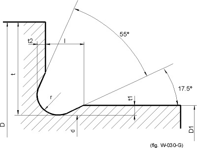 | 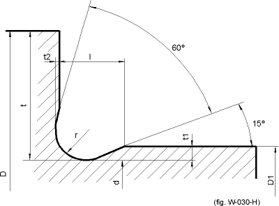 |
| DIN 509 形状 G | DIN 509 形状 H |
| 根据 FKM，这些形状按形状 D 处理。 | |
- 带过盈配合的轴肩
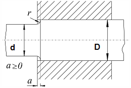
| 在 Hänchen+ Decker 和 AGMA 2101 中： | 不可行。 |
| 在 DIN 743 中： | 缺口系数按轴肩计算，但采用比值 d/(1.1*D)。缺口效应在 D/d ≈ 1.1 和 r/(D/d) ≈ 2 时最大。此条件仅在 D/d = 1.1 时适用，否则使用轴肩的缺口效应。 |
| 在 FKM 指南中： | 缺口效应系数按配合 H7/n6 确定。缺口效应系数也按轴肩计算，然后在后续计算中按最不利情况使用。 |
缺口系数在不同方法中都有说明。按 FKM 计算的缺口系数通常明显大于按 DIN 计算的缺口系数。
- 带锥形过渡的轴肩
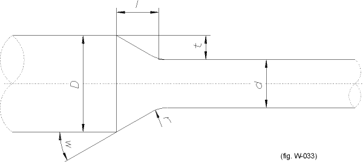
- 轴槽
有以下变体：
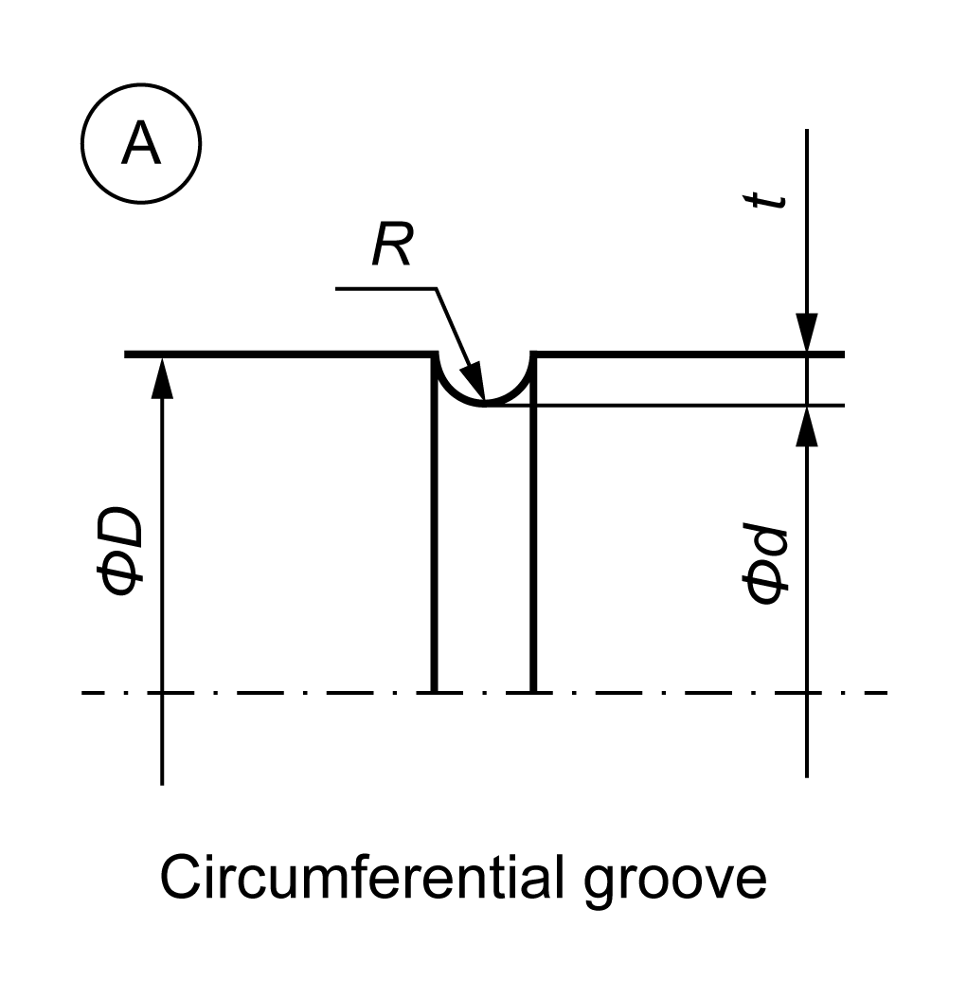
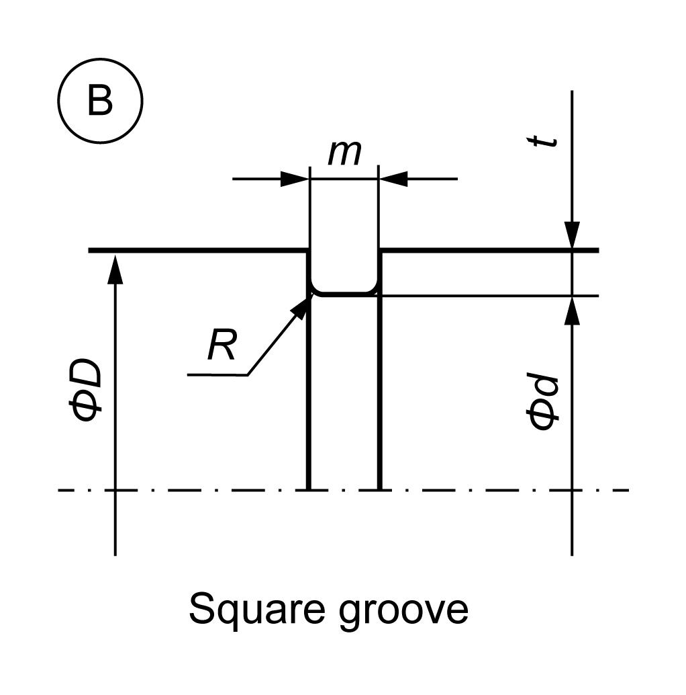
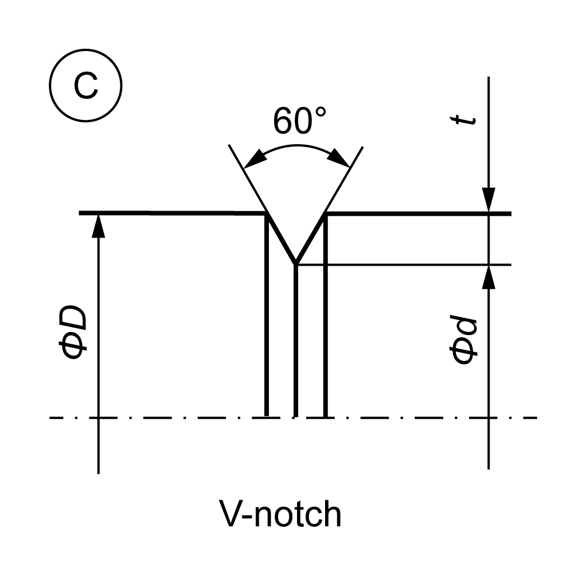
- 螺纹
螺纹的缺口系数在专业文献中没有单独提供。因此，螺纹的缺口系数按 V 形缺口处理。
- 过盈配合：过盈配合（紧过盈配合、轻微过盈配合、带退刀槽的过盈配合）
DIN 743 中仅定义了紧过盈配合的缺口系数，因此使用 FKM 指南来定义其他类型过盈配合的系数。注意：
过盈配合类型"轻微过盈配合"和"带退刀槽的过盈配合"已不再出现在最新版 FKM 指南（第 7 版，2020 年）中。它们根据旧版 FKM 指南（2012 年）确定。对于升级或新开发，应使用"过盈配合"这一过盈配合类型。
为不同类型的过盈配合定义缺口效应系数：
按 FKM 和 DIN 743 的轻微过盈配合： 弯曲和拉伸/压缩的缺口效应系数按 Kogaev 的图 5.3-11 确定；扭转系数使用公式 5.3.16 确定；剪切力系数使用公式 βQ = 1+(βT-1)/2（按 Haibach 教授的假设）确定。
这种过盈配合类型在 FKM 指南（2012 年）中有描述，不应再使用。
过盈配合 按 FKM： 弯曲的缺口效应系数按表 5.3.1 中"无毂悬伸的过盈配合"图所示计算，扭转值由弯曲值计算得出。 过盈配合 按 DIN 743： 弯曲和扭转的缺口效应系数取自 DIN 743-2 的表 1、案例 2。
带退刀槽的过盈配合 按 FKM 和 DIN 743： "带例外情况的过盈配合"的缺口效应系数在弯曲情况下按 FKM 指南的表 5.3.1、图 3 确定，扭转值由弯曲值结合 FKM 指南公式确定。
这种过盈配合类型在 FKM 指南（2012 年）中有描述，不应再使用。
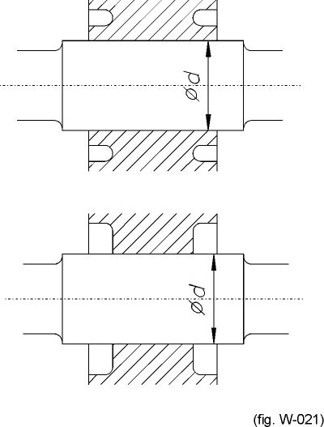
上方：带退刀槽的过盈配合。
下方：带端部卸荷的过盈配合。
键
在每种方法中，弯曲截面模量由轴直径 d 确定。如 Hänchen 所述，扭转截面模量由内切圆 d - t 计算得出。根据 FKM、DIN 和 AGMA，它由外轴直径 d 计算得出。
缺口系数在不同方法中都有说明。然而，Hänchen 提供的相关信息非常少，无法据此外推更高强度钢材的值（需附带相应的计算注释）。相比之下，这些值在 DIN 标准和 FKM 指南（带键过盈配合的表格）中有详细说明。AGMA 6101 中描述了键的两种不同生产方法（侧铣刀或键槽铣刀）。该标准还区分了 2 种不同的硬度范围。
程序包含带键截面的表格。数据从数据文件导入，该文件包含 DIN 6885.1（对应于 ISO/R 773）、DIN 6885.2 和 DIN 6885.3 标准。您也可以指定其他标准。
- 锯齿形花键和直边花键
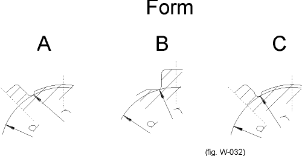
直边花键形状
要计算锯齿形花键或直边花键，您必须先输入齿顶圆和齿根直径数据。所有其他值仅用于文档记录。
要计算截面模量：
| 在 Hänchen & Decker 和 FKM 中： | 根据平均值（da/2 + df/2） |
| 在 DIN 743 和 AGMA 6101 中： | 根据齿根圆 |
缺口系数在不同方法中都有说明。
例外情况是依据 FKM 的计算，其中直边花键的齿根直径（此例中为：d）用于计算缺口半径。
- 横向孔
- 光轴
如果选择，缺口系数设为 1。对于具有最大应力的截面，应选择此项。
- 输入您自己的缺口系数（参见"截面"章）
- 相交缺口效应（参见"相交缺口效应"章）
Cross-section types
- Shoulder
- Shoulder with relief groove
| FKM Shape B | FKM Shape D |
| DIN 509 Shape E | DIN 509 Shape F |
| According to FKM, these shapes are handled like shape B. | |
| DIN 509 Shape G | DIN 509 Shape H |
| According to FKM, these shapes are handled like shape D. | |
- Shoulder with interference fit
| In Hänchen+ Decker and AGMA 2101: | not possible. |
| In DIN 743: | The notch factor is calculated like a shoulder, but with the ratio d/(1.1*D). The maximum transmission for D/d ~ 1.1 and for r/(D/d) ~2. This condition is only applied if D/d = 1.1, otherwise the notch effect of the shoulder is used. |
| In the FKM guideline: | The notch effect coefficient is determined for the fit H7/n6. The notch effect coefficient is also calculated for a shoulder and then used, in the worst case, in subsequent calculations. |
Notch factors are documented in the different methods. The notch factors calculated in FKM are usually significantly larger than in DIN.
- Shoulder with conical transition
- Shaft grooves
With the following variants:
- Thread
Notch factors for threads are not supplied separately in the specialist literature. For this reason, notch factors for threads are handled like those for V-notches.
- Interference fit: Interference fit (tight interference fit, slight interference fit, interference fit with relief grooves)
Only notch factors for the tight interference fit are defined in DIN 743, so the FKM Guideline is used to define the factors for the other types of interference fit.Note:
Interference fit types "Slight interference fit" and "Interference fit with relief grooves" are no longer present in the latest version of the FKM Guideline, the 7th edition (2020). They are determined according to the old FKM Guideline (2012). The "Interference fit" interference fit type should be used for upgrades or new developments.
Defining notch effect coefficients for different types of interference fit:
Slight interference fit according to FKM and DIN 743: The notch effect coefficients for bending and tension/compression are defined according to Kogaev, Figure 5.3-11. Formula 5.3.16 is used to define torsion. Formula βQ = 1+(βT-1)/2, an assumption according to Prof. Haibach, is used to define shearing force.
This type of interference fit is described in the FKM Guideline (2012) and should no longer be used.
Interference fit acc. to FKM: The notch effect coefficients for bending are calculated as shown in Figure "Interference fit without hub overhang" in Table 5.3.1. The values for torsion are calculated from the value for bending. Interference fit acc. to DIN 743: The notch effect coefficients for bending and torsion are taken from Table 1., Case 2., in DIN 743-2.
Interference fit with relief grooves acc. to FKM and DIN 743: The notch effect coefficients for "Interference fit with exceptions" are determined according to Table 5.3.1, Figure 3, in the FKM Guideline for bending. The value for torsion is determined from the value for bending with the formula from the FKM Guideline.
This type of interference fit is described in the FKM Guideline (2012) and should no longer be used.
Top: Interference fit with relief grooves.
Below: Interference fit with end relief.
Key
In each method, the moment of resistance for bending is determined from shaft diameter d. As described by Hänchen, the moment of resistance for torsion is calculated from the incorporated circle d - t. According to FKM, DIN and AGMA, it is calculated from the outer shaft diameter d.
The notch factors are documented in the different methods. However, Hänchen provides very little information about this that can be used to extrapolate values for steel of higher strength (with the appropriate comment about the calculation). In contrast, these values are well documented in the DIN standard and the FKM Guideline (in the tables for Interference fit with key). Two different production methods for keys are described in AGMA 6101 (side milling cutter or keyway cutter). This standard also distinguishes between 2 different hardness ranges.
The program includes tables for cross sections with keys. The data is imported from a data file which includes the DIN 6885.1 (corresponds to ISO/R 773), DIN 6885.2 and DIN 6885.3 standards. You can also specify other standards.
- Serration and straight-sided splines
Straight-sided spline shapes
To calculate serrations or straight-sided splines, you must first enter the tip circle and root diameter data. All other values are used purely for documentation purposes.
To calculate the moments of resistance:
| In Hänchen & Decker and FKM: | From the mean value (da/2 + df/2) |
| In DIN 743 and AGMA 6101: | From the root circle |
Notch factors are documented in the different methods.
An exception to this is the calculation according to FKM, where the root diameter of straight-sided splines (in this case: d) is used to calculate the notch radius.
- Cross hole
- Smooth shaft
If you select the notch factor is set to 1. You should select this for the cross section with the maximum stress.
- Input your own notch factors (see chapter Cross sections)
- Intersecting notch effects (see chapter Intersecting notch effects)